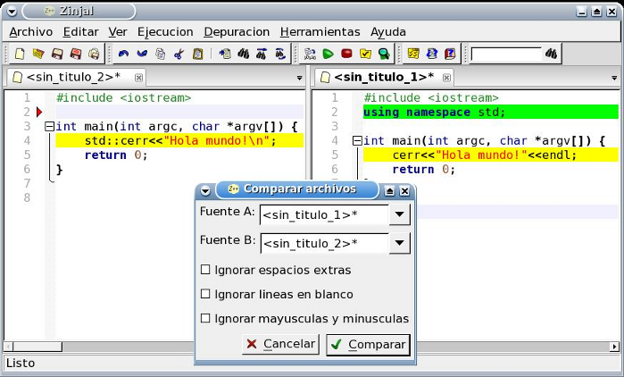

Comparación de fuentes con diff
Diff es una herramienta que permite comparar dos archivos de texto y detectar los cambios por lineas. ZinjaI aprovecha esta herramienta para comparar archivos de código fuente y colorear las líneas de acuerdo a las modificaciones. Se pueden comparar dos fuentes de de distintos archivos, o un archivo abierto y modificado con su versión en disco y sin modificar.

El código de colores utilizado para mostrar los resultados es el siguiente:
- Fondo de linea amarillo: indica que la linea o el bloque de lineas han cambiado (puede cambiar la cantidad de lineas del bloque tambien).
- Fondo de linea verde: indica son lineas nuevas, que no existian en el otro archivo
- Flecha roja en el mágen: indica el otro archivo tiene allí lineas que este no
Notar entonces que siempre que se encuentren lineas amarillas de un lado, se deberán encontrar las correspondientes tambien amarillas del otro, y siempre que se encuentren lineas verdes de un lado, se deberá encontrar la flecha roja del otro.